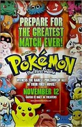

Contents | Features | Reviews | Books | Archives | Store |
 |
|
| Movie Credits | Buy It! |
Pokémon
Review by
Elias Savada
Posted 12 November 1999
|  |
Directed by Kunihiko
Yuyama. Starring
the voices of
Veronica Taylor, Written by Takeshi Shudo. |
I’m about
forty years too old to take this movie seriously. Or even understand it. Nearly
anyone over twelve (college students excepted), isn’t likely to have a clue
what’s going on in this colorfully lowbrow and nearly incomprehensible
cartoon. I have a few recommendations below for those parents unfortunate enough
to have pre-teen youngsters who eat, drink, and breath Pokémon,
a two-year old craze from the country that hoisted Godzilla
and Nintendo upon the world. Yeah, and it’s spawned a multi-billion dollar
industry of video-games, trading cards, a television show, and now, God help us,
an unsinkably bad and unquestionably mis-rated import that has already turned
the movie business upside down with nearly $20 million in admissions the first
two days BEFORE the opening weekend. Only three films had a better Wednesday
opening: Star Wars: Episode 1: The Phantom
Menace, Independence Day, and Men
in Black. The Oriental blitzkrieg of the cinematic adventures of 151 pocket
monsters-- I’m inclined to think that the title translates more appropriately
as “Puke, man!”-- is truly unstoppable, with kids flooding most theaters for
the free cards that have fostered this phenomenon. Young crowds, most whose
heads barely rise above the seat backs, are lining up in droves, boggling adult
minds. Charlie Brown has two words for his animated cousins: “Good Grief!”
Yes, those suggestions for adults with tykes that will
die if they don’t see this damned film.
1. Pay one of your employees a bonus to take your kid(s).
2. Bribe your teenage offspring or babysitter to take little Joey and/or Megan to the mall multiplex.
3. Find a neighbor with children the same age and draw lots on who will be the chaperon. Quickly learn a good card trick so you don’t lose.
4. Locate a theater with a Starbucks next door. Drop the kids off and buy a few lattés. Relax. Read the newspaper. Pick the kids up 90 minutes later.
5.
Catch the flu. Apologize, but be thankful. At least until you recover and
have to figure out some other excuse.
There’s actually two films here dealing with the main
characters, comprised of the Pokémon,
named Pikachu (gezundheit!), Squirtle, Bulbasaur, Meowth and their human
trainer/friends Ash, Misty, Brock, and Team Rocket. The opening twenty minutes
is the truly torturous Pikachu’s
Vacation, proving how much a fish out of water this reviewer was. Seemingly
computer narrated, with the rest of the dialogue being secret gibberish, this
short apparently introduced two new pocket beasties, Snubble and Marill. Sounds
like a law firm to me. Maybe I can sue for cruel and unusual punishment.
The 70-minute feature presentation is pretty much a
walking trading card told with rudimentary cartoon techniques. Nothing exciting
or exceptional. The story is gathered from Frankenstein
and genetic mutation horror films (involving the legendary Mew and his evil
clone, the Super Pokémon Mewtwo), and Road Runner shorts. The Acme brand
violence may be bloodless, but it certainly shouldn’t have warranted the
“G” rating the Motion Picture Association of America bestowed on this
slap-happy battle epic, with a absurdly ludicrous ending that proclaims fighting
is wrong. (“Perhaps for you these events are best forgotten.”) So when Joey
and Megan return home from this sugar-sanitized but commotion-filled experience,
don’t be surprised to find the kids fighting (mock or otherwise) and then
(hopefully) make up, just like their favorite characters. Life often imitates
art and there will undoubtedly be some playful over-reactions by the young. Keep
a cautious eye on the youngsters.
I’m probably taking the wrong slant on this film, but I was just bored to tears. Regrettably, resistance was futile and the dialogue dreadful, reduced to such phrases as “Send in the Clones” and “I wonder if they feel clonesome.” It’s a truly baffling feeling. I have thankfully gotten it out of my system and for those adults who have or will suffer through the next few weeks, you will be avenged. Toy Story 2 is just around the corner, and, believe me, you’ll laugh yourself silly and enjoy every minute of it.
Contents | Features | Reviews
| Books | Archives | Store
Copyright © 1999 by Nitrate Productions, Inc. All
Rights Reserved.